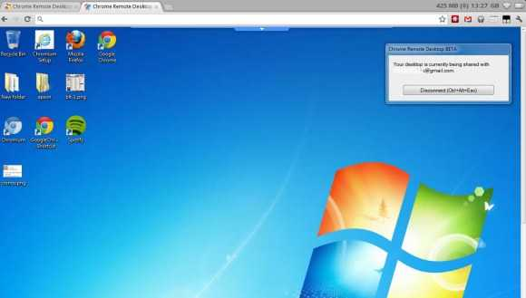

| description: Allows you to securely access your computer over the Internet through Chrome. url: https://chrome.google.com/webstore/detail/gbchcmhmhahfdphkhkmpfmihenigjmpp license: 'BSD' depends: python2 python2-psutil gconf gtk2 nss xorg-utils xorg-server xorg-xkb-utils xorg-xauth nano created_at: Sunday Feb 21, 2016 at 04:40 pushed_at: Tuesday Apr 05, 2016 at 03:47 |  |